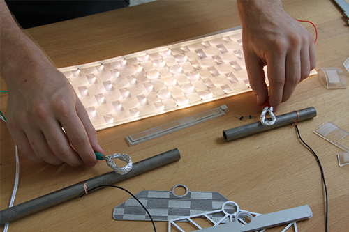
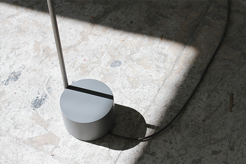
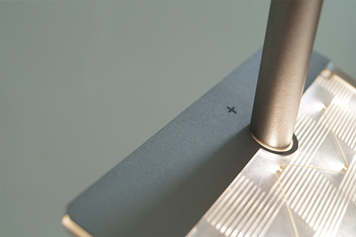
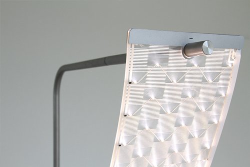
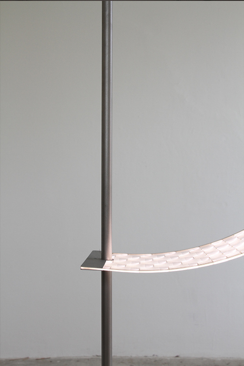

PlusMinus a new approach to the traditional floor lamp. Using an innovatine illuminant, PlusMinus creates unique lighting solutions for numerous occasions.

Printed circuits and LED on a carrier material, casted in PVC. Using this new material, the user is able to change position, direction and density of the illuminant.
    
Glass bead blasted, stainless steel pipe seperated into two poles Charged with low voltage power the whole tube becomes the power switch, as the illuminant is moved to its respective poles. The illuminant moves across the pipe and creates individual lighting situations.


“Light” shows the immateriality of dreams. Sometimes we’re not sure if something is real or not, if we are actually dreaming or if we are awake. What kind of material is that? Can I touch it? Using a holographic effect “Light” is exploring the boundaries of understanding. Stainless steel, dichroic film, Neonlight, mirror, fresnel lense.